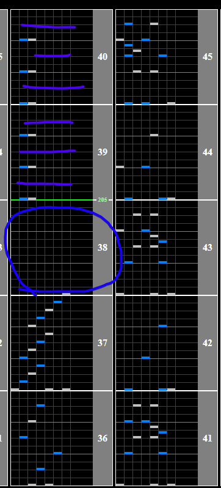

Marie Antoinette
Chart Preview
Chart played by Empress CS Autoplay, uploaded by hl1auz

★★★★☆ Method 1: Double lane cover removal
Make sure to use regular hi-speed for this strategy, as disabling your lane cover in recent styles floats. It is also recommended to use a LIFT Substitute.
Marie Antoinette goes from 215BPM -> 205BPM -> 248BPM.
The first change is towards the beginning, and can be (but doesn't need to be) mitigated by moving your lane cover a small amount in the circled gap.

Optimal lane cover is 173WN (or 173 / 1000 * LIFT). For the ending speedup section there is a similar large gap where you can turn off your lane cover. Simply turn off your lane cover, and the chart will be scrolling at the correct speed.

★★☆☆☆ Method 2: Gear Shift
Depending on your Green Number, you might be able to just shift down 1 or 2 in the blue circle in the image above to cover the speedup. If you can do this it is way easier and more consistent, but this method in itself doesn't cover as wide of a range of Green Numbers and will likely require you to fiddle with your lane cover to find a comfortable shift.
★☆☆☆☆ Method 3: Float
If neither Method 1 or 2 work for you, you can just float the chart once you reach the speedup. It's relatively safe, even for holding a hard clear. Similar to Method 1, the initial float is optional.
Float right on the green line (BPM change)